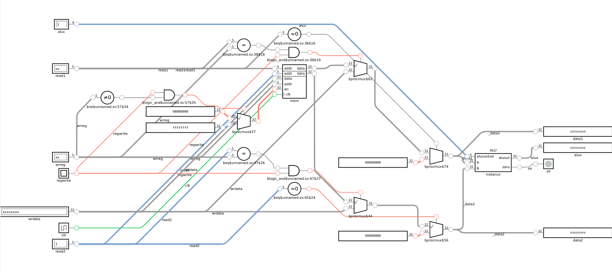

A disciplina de Introdução à Arquitetura de Computadores (DCC017) explora o funcionamento do processador
e da memória de computadores. A fim de fixar todo o conhecimento adquirido na
parte do processador, a linguagem de descrição de hardware Verilog foi escolhida para
ver na prática o esquema de uma CPU e seu caminho de dados. Nesse sentido, esse trabalho prático serviu como exercı́cio da linguagem e como um estudo detalhado
da arquitetura de instruções RISC-V.
O TP foi desenvolvido pelos alunos:
Para a realização deste trabalho prático foram utilizadas as ferramentas do Google Colab para a implementação dos códigos em verilog e os testes em assembly, e o DigitalJS para a visualização dos circuitos. A imagem a seguir é uma fração do circuito responsável pela entrega dos dados do banco de registradores para a unidade lógica e aritmética:

À esquerda temos os inputs dos sinais de controle e do clock, no meio há o banco de registradores,
e à direita, a ALU e os outputs.
Caso queira ver em detalhes a implementação desse trabalho com os comentários,
acesse o arquivo do Jupyter Notebook disponibilzado abaixo:
https://drive.google.com/file/d/1GzO6Qp_aAmRndnAIs_NiCfxNObi4XG0W/view?usp=sharing
Patterson, David A., and John L. Hennessy. "Computer Organization and Design RISC-V Edition: The Hardware Software Interface"
The RISC-V Instruction Set Manual Volume I: User-Level ISA